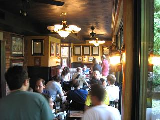

Today
Today I:
- Clicked the "submit" button on my first major grant application.
- Got my first copy of Beautiful Code (picture below).
- Sold a science fiction story to On Spec magazine.
- Finished [sic] rewriting the introduction to the first-year Python book we've been working on.
- Lost a game of chess (came out on the short end of a messy trade).
I’m now heading out to the pub with students and colleagues. Life isn’t bad.
Later: about forty people showed up at the pub. Madeleine was, of course, the hit of the party ;-) Thanks to Serguei for the photo below.
